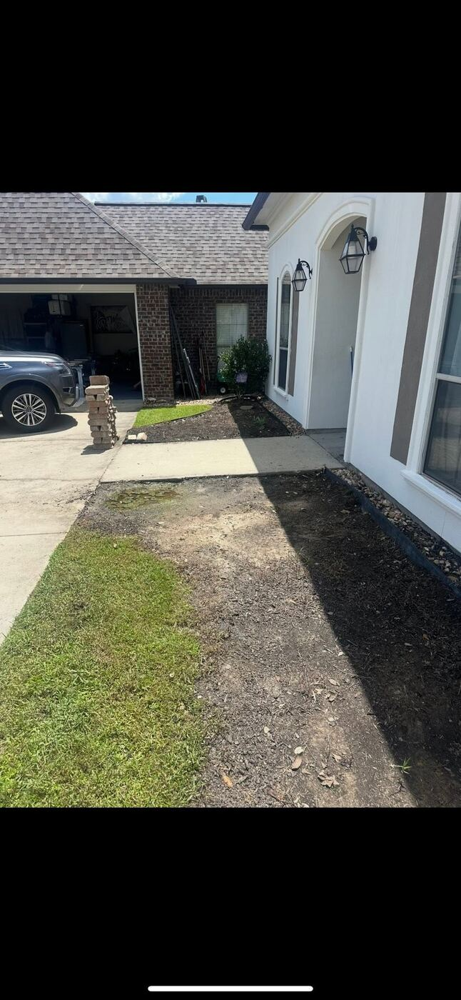
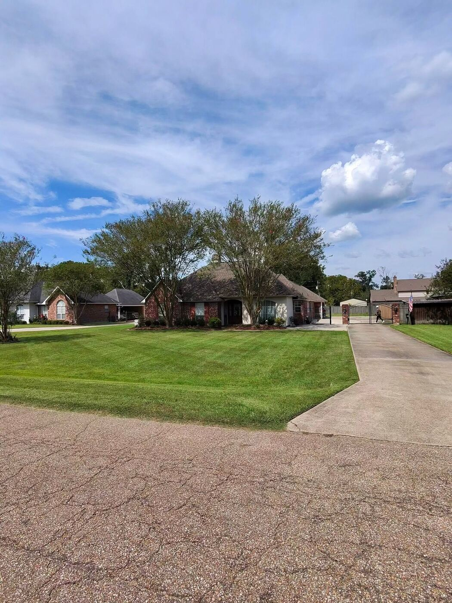
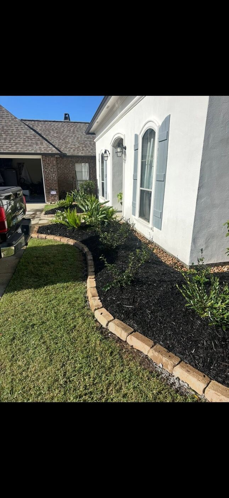

Services / Pressure Washing
Driveways, patios, walkways, and fences cleaned across Ascension and Livingston Parishes.
Driveways & Walkways
Years of dirt, mildew, and tire marks come off with the right pressure and technique, not just blasted at max PSI and hoped for the best. We match pressure to the surface so you get clean concrete, not etched or pitted concrete.



Patios, Walkways & Fences
Patios, walkways, and fences need different handling than open concrete. We adjust the pressure and technique for the material instead of treating every surface the same.
What's Included
Concrete and pavers cleaned at the right PSI for the material.
Controlled pressure for fence surfaces that need a more careful pass.
Mold, mildew, and buildup lifted without damaging the finish.
Tell us what the property needs and where it is.